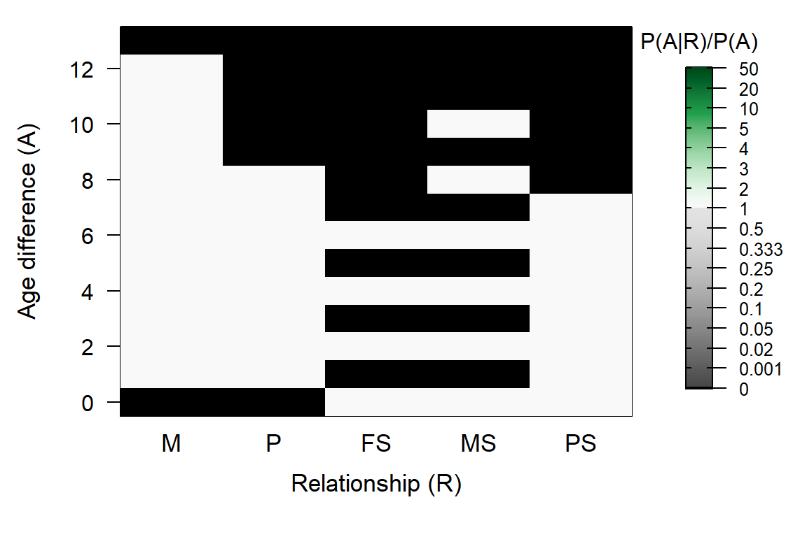

8 Customise
8.1
Customising the ageprior is generally not necessary, as a sample-specific ageprior will be estimated after parentage assignment based on the scaffold-pedigree.
Parentage assignment is rarely improved by a non-default ageprior, unless the number of SNPs is so low or their quality so poor that it is difficult to genetically distinguish between parent-offspring and full sibling pairs.
The ageprior used for full pedigree reconstruction may require tweaking if for example the assigned parents reflect only a portion of the biologically possible parental ages, or if some assigned parents are wrong and have a biologically impossible age.
8.2 Via args.AP
During pedigree reconstruction, you can pass arguments to MakeAgePrior() via sequoia()’s argument args.AP. Use this to explicitly specify Discrete, Smooth or Flatten, or to increase MaxAgeParent or MinAgeParent.
8.3 Different input pedigree
If you have a reasonable quality pedigree that contains many more individuals than have been SNP-genotyped, for example based on field observations and/or microsatellite data, an ageprior estimated from that old pedigree may be more informative than the one estimated from a limited number of SNP-genotyped parent-offspring pairs. A pedigree cannot be passed via args.AP, but this can be done as follows instead:
APfromOld <- MakeAgePrior(Pedigree = MyOldPedigree,
LifeHistData = LH,
Smooth = TRUE)
SeqOUT <- sequoia(GenoM = Geno,
LifeHistData = LH,
SeqList = list(AgePriors = APfromOld))The ageprior in SeqList will be used for both parentage assignment and full pedigree reconstruction.
8.4 Other tweaks
The easiest way to create a fully custom ageprior is to generate an approximate ageprior with MakeAgePrior, and tweak it by hand or using your own function. For example, imagine a species where females breed only every other year, but may have twins:
AP <- MakeAgePrior(MaxAgeParent = c(12, 8), Plot=FALSE)## Ageprior: Flat 0/1, overlapping generations, MaxAgeParent = 12,8AP[as.character(seq(1,12,by=2)), c("MS", "FS")] <- 0
PlotAgePrior(AP)
# check if valid ageprior:
chk <- sequoia:::CheckAP(AP) 8.5 From age-difference distribution
If you know approximately the distributions of parental ages, and the age differences between siblings, you might be able to create a table similar to tblA.R and follow the subsequent steps described here to generate an ageprior matrix. The most challenging may be to generate the age-difference distribution of ‘all individuals’ (column X), used for standardisation.
8.6 Specifications
The ageprior must abide by the following rules:
- a matrix or dataframe with values between 0 and 1000 inclusive. In the
MakeAgePrior()output, the smallest possible non-zero value is 1/1000, to avoid excessive weight of the ageprior relative to the genetic likelihood; - columns named M, P, FS, MS, and PS, any other columns are ignored;
- each relationship must be possible (\(>0\)) for at least one age difference;
- rownames are ignored and rows are presumed to be for age difference 0, 1, 2, …, except when rownames include negative numbers (as for
AgePriorExtra), then negative-numbered rows are deleted and the remainder are presumed to be ordered and for age difference 0, 1, 2, …; - any age differences not included (i.e. >
nrows-1) are presumed impossible for all types of parents and siblings (\(0\) in all 5 columns); - the maximum age difference between siblings must be consistent with the maximum breeding tenure of a parent (minimum – maximum age of reproduction).
To check whether your ageprior matrix satisfies these criteria, use it in any function that takes AgePriors (or SeqList) as input, or call the internal function CheckAP() directly.